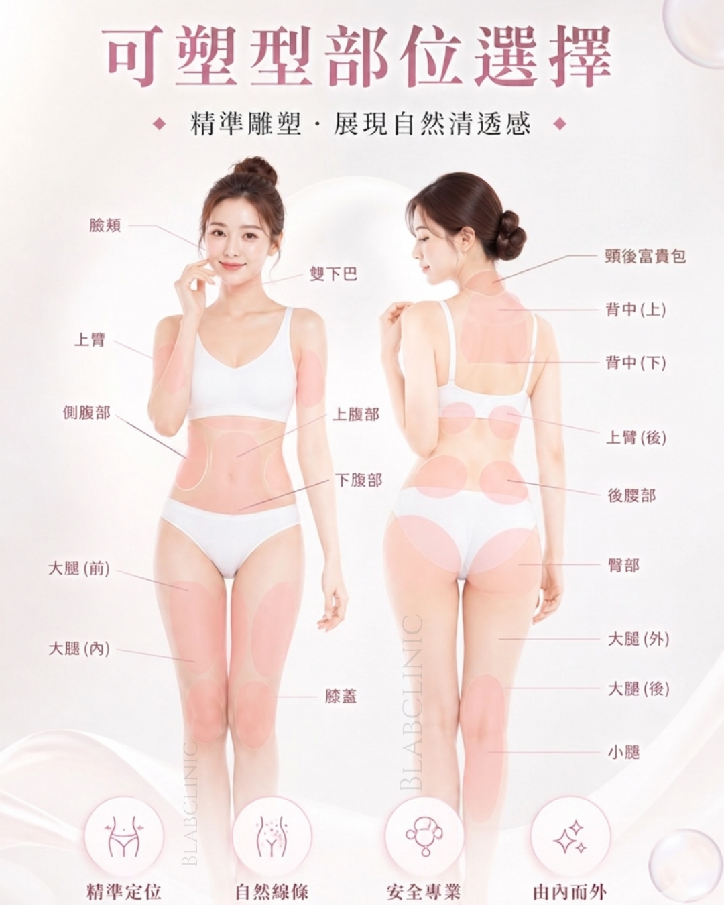

BLAB CLINIC
透明質酸
Botox 瘦面
溶脂塑形
透明質酸填充 (Filler)
使用醫療級玻尿酸，針對面部凹陷（如淚溝、蘋果肌、太陽穴）或輪廓不平整進行填充，即時回復飽滿少女感，效果自然不僵硬。
透明質酸 FAQ
Q: 做完可以維持幾耐？
A: 視乎體質同部位，一般可以維持 9-15 個月。透明質酸會隨時間畀身體自然吸收代謝。
Q: 打完會唔會好腫或者瘀青？
A: 部分客會有輕微微腫，通常 2-3 日消退。我哋採用微創手法，盡量減低瘀青機會，當日可正常社交。
Q: 效果係咪即時見到？
A: 係嘅！打完嗰下已經即時見到填充部位飽滿咗。
立即預約諮詢
Botox 瘦面除皺
透過放鬆咀嚼肌，縮小面部輪廓，達到精緻 V 面效果；同時有效撫平抬頭紋、魚尾紋等動態紋路，令皮膚回復平滑。
Botox 瘦面 FAQ
Q: 幾時先見到瘦面效果？
A: 肌肉放鬆需要時間，通常喺注射後 2-4 星期開始見到面形變尖，1 個月後效果最明顯。
Q: 打完面部會唔會好僵硬？
A: 只要劑量準確、位置適中，效果會非常自然，完全唔會影響表情。
Q: 多久需要補打一次？
A: 效果一般維持 4-6 個月。定時補打可以令咀嚼肌長期處於放鬆狀態，令 V 面效果更持久。
立即預約諮詢
溶脂塑形療程

精準雕塑 · 展現自然清透感
溶脂常見問題 FAQ
Q: 適合邊啲部位？
A: 根據上圖標示，雙下巴、拜拜肉、腰腹同大腿等頑固贅肉都好適合。
Q: 過程係點？需要請假嗎？
A: 療程只需約 15-20 分鐘，微刺感。術後無需休養，即日可照常返工。
立即預約諮詢